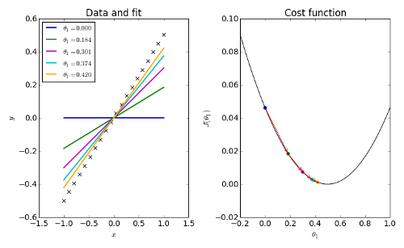
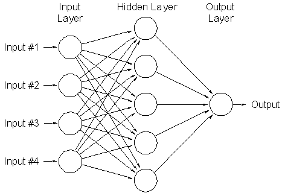
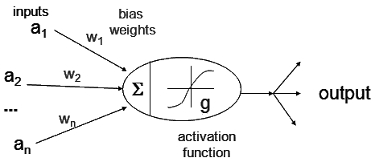

Deep Learning
Table of Contents
1 Deep Learning
1.1 linear regression
import matplotlib.pyplot as plt import numpy as np X, Y = 0, 0 def get_training_set(): global X,Y data = np.loadtxt("../extra/data.txt", delimiter=",") X = data[:, 0].reshape(-1, 1) Y = data[:, 1].reshape(-1, 1) get_training_set() plt.scatter(x=X[:, 0], y=Y[:, 0]) plt.show()

Figure 1: png
1.1.1 training set
print("X:",X[:10]) print() print("Y:",Y[:10])
X: [[6.1101] [5.5277] [8.5186] [7.0032] [5.8598] [8.3829] [7.4764] [8.5781] [6.4862] [5.0546]] Y: [[17.592 ] [ 9.1302] [13.662 ] [11.854 ] [ 6.8233] [11.886 ] [ 4.3483] [12. ] [ 6.5987] [ 3.8166]]
1.1.2 feature & label
X is a matrix of features
Y is a matrix of labels
1.1.3 regression
给定一个 training set 中不存在的 x, 例如 5.2, 如何预测它对应的 y?
1.1.4 hypothesis function
\(\hat{y}=h(x)=Wx+B\)
W ~ weights
B ~ Bias
get_training_set() plt.scatter(x=X[:, 0], y=Y[:, 0]) W=0.2 B=8 x=np.arange(5,22.5,0.1) plt.plot(x, np.dot(x,W)+B,label="bad", ) W=1.18 B=-3.79 plt.plot(x, np.dot(x,W)+B,label="good") plt.legend() plt.show()

Figure 2: png
1.1.5 cost function
使用 cost function 来衡量 hypothesis function 是否足够好, cost function 值越小， hypothesis function 越好
1.1.6 mean square errno
\(J(W,B)=\frac{1}{2m}\sum\limits_{i=1}^{m}(\hat{y^i}-y^i)^2\)
1.1.7 gradient decent
gradient decent
$ W → W-α\frac{\partial}{∂{W}}J(W,B) $
$ B → B-α\frac{\partial}{∂{B}}J(W,B) $

Figure 3: gradient
1.1.8 partial derivative
\(\frac{\partial}{\partial{W}}J(W,B) = \frac{1}{2m}\sum2/(\hat{y}-y)/\frac{\partial}{\partial{W}}{\hat{y^i}} = \frac{1}{m}\sum(\hat{y}-y)*{x^j}\)
\(\frac{\partial}{\partial{B}}J(W,B) = \frac{1}{2m}\sum2/(\hat{y}-y)/\frac{\partial}{\partial{B}}{\hat{y^i}} = \frac{1}{m}\sum(\hat{y}-y)\)
1.1.9 simple linear regression example
from sklearn import preprocessing from sklearn.datasets import load_boston import numpy as np import matplotlib.pyplot as plt from matplotlib.colors import ListedColormap from PIL import Image import sys EPOCH = 50 LEARNING_RATE = 0.1 WITH_FEATURE_SCALING=True def mse(A, B): return np.square(np.subtract(A, B)).mean()/2 def get_training_set(): global X, Y data = np.loadtxt("../extra/data.txt", delimiter=",") X = data[:, 0].reshape(-1, 1) Y = data[:, 1].reshape(-1, 1) if WITH_FEATURE_SCALING: X = preprocessing.scale(X) Y = preprocessing.scale(Y) def cost_function(X, Y, W, B): m = len(X) J = 0. dw = np.zeros_like(W) db = np.zeros_like(B) y_hat = np.matmul(X, W) + B J = mse(y_hat, Y) dw = np.matmul(np.transpose(X), y_hat - Y)/m db = (y_hat - Y).mean() return J, dw, db def gradient_decent(X, Y, W, B): alpha = LEARNING_RATE for epoch in range(EPOCH): cost, dw, db = cost_function(X, Y, W, B) if epoch % (EPOCH//10) == 0: print("training: #", epoch, cost ,W, B) W = W - alpha * dw B = B - alpha * db return W, B X, Y = 0, 0 W, B = 0, 0 def train(): global X, Y, W, B W = np.random.randn(X.shape[1], 1) B = np.random.randn(1, 1) W, B = gradient_decent(X, Y, W, B) def predict(): global W, B, X, Y plt.scatter(x=X[:, 0], y=Y[:, 0]) plt.plot(X, np.matmul(X, W) + B, 'g') plt.show() get_training_set() train() predict()
training: # 0 0.44911036737309545 [[1.57832978]] [[0.22798332]] training: # 5 0.2536317389235355 [[1.27510542]] [[0.13462187]] training: # 10 0.1854725556828555 [[1.09605446]] [[0.07949287]] training: # 15 0.16170691799200512 [[0.99032667]] [[0.04693974]] training: # 20 0.15342035251397768 [[0.92789546]] [[0.02771745]] training: # 25 0.15053100578931256 [[0.89103046]] [[0.01636688]] training: # 30 0.14952355288044825 [[0.86926204]] [[0.00966448]] training: # 35 0.14917227577171124 [[0.85640801]] [[0.00570678]] training: # 40 0.149049793017394 [[0.84881783]] [[0.00336979]] training: # 45 0.14900708592167952 [[0.84433591]] [[0.00198983]]

Figure 4: png
1.1.10 gradient checking
make sure that:
$\frac{\partial}{∂{W}}J(W,B) ≈ lim\h->0\frac{J(W+h,B)-J(W,B)}{h} $
def check_gradient(): global X,Y W = np.random.randn(X.shape[1], 1) B = np.random.randn(1, 1) cost,dw,db=cost_function(X,Y,W,B) W[0]+=1e-3 cost2,_,_=cost_function(X,Y,W,B) print((cost2-cost)/1e-3,dw[0,0]) W[0]-=1e-3 B[0]+=1e-3 cost2,_,_=cost_function(X,Y,W,B) print((cost2-cost)/1e-3,db) check_gradient()
-0.8722622453554152 -0.8727622453556267 -1.5264856192187537 -1.5269856192187428
1.1.11 learning rate
- learning rate 过小会导致 gradient decent 过慢
- learning rate 过大会导致 gradient decent 无法收敛
- 在最小值附近反复
- 变的越来越大
1.1.12 feature scaling
通过把 feature scale 到一定固定的范围， 例如 (0,1), 可以更容易的选择合适的 learning rate
WITH_FEATURE_SCALING=False get_training_set() train() predict()
training: # 0 70.15408361397526 [[-0.40822281]] [[-0.4916959]] training: # 5 24925634169.17572 [[24500.47499024]] [[2460.57784825]] training: # 10 9.625926543152364e+18 [[-4.81456725e+08]] [[-48367551.32807031]] training: # 15 3.717396364137783e+27 [[9.46140039e+12]] [[9.50500295e+11]] training: # 20 1.4356057742758617e+36 [[-1.85931762e+17]] [[-1.86788622e+16]] training: # 25 5.544105974322745e+44 [[3.6538587e+21]] [[3.67069739e+20]] training: # 30 2.1410551284544287e+53 [[-7.18042105e+25]] [[-7.21351179e+24]] training: # 35 8.268451368556306e+61 [[1.41106843e+30]] [[1.41757129e+29]] training: # 40 3.193158696643795e+70 [[-2.77297681e+34]] [[-2.78575599e+33]] training: # 45 1.2331526192107467e+79 [[5.44934622e+38]] [[5.47445936e+37]]

Figure 5: png
WITH_FEATURE_SCALING=False LEARNING_RATE=0.01 get_training_set() train() predict()
training: # 0 103.38177778309628 [[-0.85004288]] [[1.11590542]] -125.37942448626893 -125.42012645764883 training: # 5 6.86205229028994 [[0.67856153]] [[1.22261939]] -0.07423379726745338 -0.11493576867876723 training: # 10 6.81940301336375 [[0.68344985]] [[1.1766803]] -0.05115933051325072 -0.09186130192399862 training: # 15 6.777519309593261 [[0.68802624]] [[1.13112685]] -0.05033045343871834 -0.09103242485023677 training: # 20 6.736384504793291 [[0.69256148]] [[1.08598248]] -0.04951293203792062 -0.09021490344897255 training: # 25 6.6959852083221 [[0.69705599]] [[1.04124353]] -0.048702753118412545 -0.08940472452908702 training: # 30 6.656308268968583 [[0.70151014]] [[0.99690637]] -0.04789985004727271 -0.08860182145685279 training: # 35 6.617340770671049 [[0.70592429]] [[0.95296738]] -0.04710415748121477 -0.08780612889108504 training: # 40 6.579070028312648 [[0.7102988]] [[0.90942298]] -0.04631561066581469 -0.08701758207749494 training: # 45 6.541483583591981 [[0.71463402]] [[0.86626963]] -0.045534145431957995 -0.08623611684335007

Figure 6: png
1.2 multi-feature linear regression
1.2.1 feature & label
X_train, Y_train, X_test, Y_test=0,0,0,0 def get_training_set(): X, Y = load_boston(True) X = preprocessing.scale(X) Y = Y.reshape(-1, 1) [m, features] = X.shape # Z = np.concatenate((X, Y), axis=1) # np.random.shuffle(Z) # X = Z[:, :features] # Y = Z[:, features:] global X_train, Y_train, X_test, Y_test offset = int(0.8 * m) X_train, Y_train = X[:offset], Y[:offset] X_test, Y_test = X[offset:], Y[offset:] get_training_set() print(X_train.shape) print(X_train[:5]) print() print(Y_train[:5])
(404, 13) [[-0.41771335 0.28482986 -1.2879095 -0.27259857 -0.14421743 0.41367189 -0.12001342 0.1402136 -0.98284286 -0.66660821 -1.45900038 0.44105193 -1.0755623 ] [-0.41526932 -0.48772236 -0.59338101 -0.27259857 -0.74026221 0.19427445 0.36716642 0.55715988 -0.8678825 -0.98732948 -0.30309415 0.44105193 -0.49243937] [-0.41527165 -0.48772236 -0.59338101 -0.27259857 -0.74026221 1.28271368 -0.26581176 0.55715988 -0.8678825 -0.98732948 -0.30309415 0.39642699 -1.2087274 ] [-0.41468015 -0.48772236 -1.30687771 -0.27259857 -0.83528384 1.01630251 -0.80988851 1.07773662 -0.75292215 -1.10611514 0.1130321 0.41616284 -1.36151682] [-0.41040922 -0.48772236 -1.30687771 -0.27259857 -0.83528384 1.22857665 -0.51117971 1.07773662 -0.75292215 -1.10611514 0.1130321 0.44105193 -1.02650148]] [[24. ] [21.6] [34.7] [33.4] [36.2]]
from sklearn import preprocessing from sklearn.datasets import load_boston import numpy as np import matplotlib.pyplot as plt from matplotlib.colors import ListedColormap from PIL import Image import sys EPOCH = 10000 LEARNING_RATE = 0.001 def MSE(A, B): return np.square(np.subtract(A, B)).mean()/2 def get_training_set(): X, Y = load_boston(True) X = preprocessing.scale(X) Y = Y.reshape(-1, 1) [m, features] = X.shape # Z = np.concatenate((X, Y), axis=1) # np.random.shuffle(Z) # X = Z[:, :features] # Y = Z[:, features:] global X_train, Y_train, X_test, Y_test offset = int(0.8 * m) X_train, Y_train = X[:offset], Y[:offset] X_test, Y_test = X[offset:], Y[offset:] def cost_function(X, Y, W, B): m = len(X) J = 0. dw = np.zeros_like(W) db = np.zeros_like(B) # for i in range(m): # x = X[i, :].reshape(1, -1) # y = Y[i, :].reshape(1, 1) # y_hat = np.matmul(x, W) + B # # print(y_hat[0], y[0], MSE(y_hat[0], y[0])) # loss = MSE(y_hat, y) # J += loss # dw += np.matmul(np.transpose(x), y_hat - y) # db += y_hat - y # J /= m # dw /= m # db /= m y_hat = np.matmul(X, W) + B J = MSE(y_hat, Y) dw = np.matmul(np.transpose(X), y_hat - Y) / m db = (y_hat - Y).mean(axis=0) return J, dw, db def gradient_decent(X, Y, W, B): alpha = LEARNING_RATE for epoch in range(EPOCH): cost, dw, db = cost_function(X, Y, W, B) W = W - alpha * dw B = B - alpha * db if epoch % (EPOCH // 20) == 0: print("training: #", epoch, cost) return W, B X_test, Y_test, X_train, Y_train = 0, 0, 0, 0 W, B = 0, 0 def train(): global X_train, Y_train, W, B W = np.random.randn(X_train.shape[1], 1) B = np.random.randn(1, 1) W, B = gradient_decent(X_train, Y_train, W, B) def predict(): global W, B predicted = np.matmul(X_test, W) + B print("final mse:",MSE(predicted, Y_test)) get_training_set() train() predict() print(W.shape,B.shape)
training: # 0 394.9508088516925 training: # 500 100.00785133938153 training: # 1000 48.72540414517899 training: # 1500 29.563643302467156 training: # 2000 21.405362653669222 training: # 2500 17.580513440523312 training: # 3000 15.634018864772019 training: # 3500 14.561620691509146 training: # 4000 13.919491179775438 training: # 4500 13.50050685782247 training: # 5000 13.2039753832719 training: # 5500 12.979149491604765 training: # 6000 12.799463170021674 training: # 6500 12.650373482061207 training: # 7000 12.523479650727792 training: # 7500 12.413618800743162 training: # 8000 12.317401683858627 training: # 8500 12.232456842224869 training: # 9000 12.15702919159006 training: # 9500 12.0897592813033 final mse: 11.213129305213641 (13, 1) (1, 1)
1.2.2 learning rate
1.2.2.1 learning rate 偏大
LEARNING_RATE = 0.1
train()
predict()
training: # 0 323.6508450938955 training: # 500 11.39299545706192 training: # 1000 11.389204091166178 training: # 1500 11.389189815007983 training: # 2000 11.389189761104692 training: # 2500 11.389189760901166 training: # 3000 11.389189760900395 training: # 3500 11.389189760900395 training: # 4000 11.389189760900393 training: # 4500 11.389189760900395 training: # 5000 11.389189760900393 training: # 5500 11.389189760900395 training: # 6000 11.389189760900395 training: # 6500 11.389189760900395 training: # 7000 11.389189760900395 training: # 7500 11.389189760900395 training: # 8000 11.389189760900395 training: # 8500 11.389189760900395 training: # 9000 11.389189760900395 training: # 9500 11.389189760900395 final mse: 16.537813246137475
1.2.2.2 learning rate 过大
LEARNING_RATE = 1
train()
predict()
training: # 0 323.85035063163946 training: # 500 nan training: # 1000 nan training: # 1500 nan training: # 2000 nan training: # 2500 nan /usr/lib/python3.6/site-packages/numpy/core/_methods.py:70: RuntimeWarning: overflow encountered in reduce ret = umr_sum(arr, axis, dtype, out, keepdims) /usr/lib/python3.6/site-packages/ipykernel_launcher.py:14: RuntimeWarning: overflow encountered in square training: # 3000 nan training: # 3500 nan training: # 4000 nan training: # 4500 nan training: # 5000 nan training: # 5500 nan training: # 6000 nan training: # 6500 nan training: # 7000 nan training: # 7500 nan training: # 8000 nan training: # 8500 nan training: # 9000 nan training: # 9500 nan final mse: nan
1.2.2.3 learning rate 过小
LEARNING_RATE = 0.001
train()
predict()
training: # 0 368.22478200801294 training: # 500 113.60286787202149 training: # 1000 54.16900270646828 training: # 1500 32.30450821323542 training: # 2000 23.043704375375118 training: # 2500 18.67757830837426 training: # 3000 16.42877795251914 training: # 3500 15.169696609178645 training: # 4000 14.40183707813676 training: # 4500 13.891712751211747 training: # 5000 13.52521273665566 training: # 5500 13.244422131600182 training: # 6000 13.018730561961272 training: # 6500 12.83116082771574 training: # 7000 12.671739347524003 training: # 7500 12.534213486546351 training: # 8000 12.414390934896627 training: # 8500 12.30927849859642 training: # 9000 12.216621683323485 training: # 9500 12.134649211355635 final mse: 12.350629498610731
1.3 logistic regression
from sklearn.datasets import make_moons import matplotlib.pyplot as plt from matplotlib.colors import ListedColormap X, Y = make_moons(n_samples=1000, noise=0.2) Y = Y.reshape(-1, 1) cm = ListedColormap(['#FF0000', '#0000FF']) plt.scatter(x=X[:, 0], y=X[:, 1], c=Y[:, 0], cmap=cm) plt.show()

Figure 7: png
1.3.1 feature & label
print("X:",X[:10]) print() print("Y:",Y[:10])
X: [[ 0.8525511 -0.39862199] [ 0.1632493 -0.34467561] [ 1.15179796 0.77013127] [ 1.09955561 -0.42176977] [ 2.14572763 -0.19269439] [-0.04550188 1.2857288 ] [ 1.18711691 0.17124724] [ 1.82545617 0.84777188] [-0.15896536 -0.1438627 ] [ 1.04386354 1.06882075]] Y: [[1] [1] [0] [1] [1] [0] [0] [1] [1] [0]]
1.3.2 regression
给定一个 x (x0, x1), 预测它所属的类型 （1 或 0， 蓝或红）
1.3.3 hypothesis function
linear regression 的 hypothesis function: \(\hat{y}=h(x)=Wx+B\) 对于 logistic regression 不直接适用， 因为我们需要它输出 0 或 1 的离散值
1.3.4 sigmoid
\(sigmoid(x)=\frac{1}{1+e^{-x}}\)
x=np.arange(-10,10,0.1) y=1/(1+np.exp(-x)) plt.plot(x,y) plt.show()

Figure 8: png
1.3.5 cost function
logistic regression 没有使用 mse 做为 cost function sigmoid 为何需要搭配 BCELoss
因此， logistic regression 使用 cross entropy 作为 cost function, 直观上说， 两个概率分布越接近， 其 cross entropy 越小
1.3.6 cross entropy
\(H(p,q)=-\sum _{x}p(x)\,\log q(x).\!\)
def cross_entropy(predictions, labels): epsilon = 1e-12 predictions = np.clip(predictions, epsilon, 1 - epsilon) N = predictions.shape[0] ce = 0 - np.sum(np.sum(labels * np.log(predictions))) / N return ce print(cross_entropy(np.array([[0.1,0.9]]),np.array([[1,0]]))) print(cross_entropy(np.array([[0.9,0.1]]),np.array([[1,0]]))) print(cross_entropy(np.array([[0.9,0.1]]),np.array([[0,1]]))) print(cross_entropy(np.array([[0.2,0.8]]),np.array([[0,1]])))
2.3025850929940455 0.10536051565782628 2.3025850929940455 0.2231435513142097
logistic regression 的 cost function 是一个简化版的 cross entropy:
即 p 为 \((\hat{y},1-\hat{y})\), q 为 \((y,1-y)\),
所以它的 cost function 为
\(J(W,B)=-\sum_1^m({y*\log(\hat{y})+(1-y)*\log(1-\hat{y})})\)
x=np.arange(0.01,1,0.01) plt.plot(x,-np.log(x),label="-log(x)") plt.plot(x,-np.log(1-x),label="-log(1-x)") plt.legend() plt.show()

Figure 9: png
1.3.7 partial derivative
\(h(x)=Wx+B\)
\(\hat{y}=sigmoid(h(x))\)
\(J(W,B)=-\sum({y*\log(\hat{y})+(1-y)*\log(1-\hat{y})})\)
1.4 $\frac{\partial}{∂{W}}J(W,B)
-∑{\frac{y}{\hat{y}}}\frac{\partial}{∂{W}}\hat{y}-\frac{1-y}{1-\hat{y}}\frac{\partial}{∂{W}}\hat{y} $
$\frac{\partial}{∂{W}}{\hat{y}} = \hat{y}/(1-\hat{y})/x $
\(\frac{\partial}{\partial{W}}J(W,B) = \frac{1}{m}{\sum{(\hat{y}-y})*x}\)
\(\frac{\partial}{\partial{B}}J(W,B) = \frac{1}{m}{\sum{(\hat{y}-y})}\)
1.4.1 logistic regression example
from sklearn import preprocessing from sklearn.datasets import make_moons from sklearn.datasets import make_circles import numpy as np import matplotlib.pyplot as plt from matplotlib.colors import ListedColormap from PIL import Image import sys EPOCH = 500 LEARNING_RATE = 0.01 BATCH_SIZE = 10 FEATURE_SIZE = 0 POLY_FEATURES = 3 def sigmoid(x): return 1 / (1 + np.exp(-x)) def cross_entropy(predictions, labels): epsilon = 1e-12 predictions = np.clip(predictions, epsilon, 1 - epsilon) N = predictions.shape[0] ce = 0 - np.sum(np.sum(labels * np.log(predictions))) / N return ce def draw_decision_boundary(W, B): xx, yy = np.meshgrid( np.arange(-1.5, 2.5, 0.02), np.arange(-1.5, 2.5, 0.02)) X = np.c_[xx.ravel(), yy.ravel()] poly = preprocessing.PolynomialFeatures(POLY_FEATURES, include_bias=False) X = poly.fit_transform(X) Y = ((sigmoid(np.matmul(X, W) + B)) > 0.5)[:, 0] Y = Y.reshape(xx.shape) cm = ListedColormap(['#FF0000', '#0000FF']) plt.contour(xx, yy, Y, cmap=cm) def get_training_set(): X, Y = make_moons(n_samples=1000, noise=0.2) # X, Y = make_circles(n_samples=1000, noise=0.2, factor=0.5) Y = Y.reshape(1000, 1) poly = preprocessing.PolynomialFeatures(POLY_FEATURES, include_bias=False) X = poly.fit_transform(X, Y) global FEATURE_SIZE FEATURE_SIZE = X.shape[1] return X, Y def cost_function(X, Y, W, B): m = len(X) assert (len(X) == len(Y)) J = 0. dw = np.zeros_like(W) db = np.zeros_like(B) y_hat = sigmoid(np.matmul(X, W) + B) J = cross_entropy(np.concatenate((y_hat, 1 - y_hat)), np.concatenate((Y, 1 - Y))) dw = np.matmul(X.T, y_hat - Y) / m db = (y_hat - Y).mean(axis=0) return J, dw, db W,B=0,0 def gradient_decent(X, Y, W, B): alpha = LEARNING_RATE for epoch in range(EPOCH): batch = len(X) // BATCH_SIZE total_loss = 0 for X_batch, Y_batch in zip( np.split(X[:batch * BATCH_SIZE], batch), np.split(Y[:batch * BATCH_SIZE], batch)): cost, dw, db = cost_function(X_batch, Y_batch, W, B) total_loss += cost W = W - alpha * dw B = B - alpha * db if epoch % (EPOCH//30) == 0: print("training: #", epoch, total_loss / batch) return W, B def train(): global W,B X, Y = get_training_set() Z = np.concatenate((X, Y), axis=1) np.random.shuffle(Z) X = Z[:, :FEATURE_SIZE] Y = Z[:, FEATURE_SIZE:] W = np.random.randn(FEATURE_SIZE, 1) B = np.random.randn(1, 1) W, B = gradient_decent(X, Y, W, B) def predict(): global W,B X, Y = get_training_set() cm = ListedColormap(['#FF0000', '#0000FF']) # plt.plot(X[:, 0], X[:, 1], 'bo', label='Real data') y_hat = ((sigmoid(np.matmul(X, W) + B)) > 0.5)[:, 0] plt.scatter(x=X[:, 0], y=X[:, 1], c=Y[:, 0], cmap=cm) # plt.scatter(x=X[:, 0], y=X[:, 1], c=y_hat, cmap=cm) draw_decision_boundary(W, B) plt.show() train() predict()
training: # 0 0.619742973585997 training: # 16 0.17178658979627992 training: # 32 0.13487915355393248 training: # 48 0.12197846405639046 training: # 64 0.11395684458496719 training: # 80 0.10787208561892815 training: # 96 0.10291655423822696 training: # 112 0.0987579063665693 training: # 128 0.09521177753383403 training: # 144 0.09215291261899158 training: # 160 0.08948702750211028 training: # 176 0.08714053451732778 training: # 192 0.08505555055681267 training: # 208 0.08318653814486694 training: # 224 0.08149765158102548 training: # 240 0.07996058158625095 training: # 256 0.07855283335926001 training: # 272 0.07725638132916592 training: # 288 0.076056636971483 training: # 304 0.07494166614098187 training: # 320 0.07390159911921022 training: # 336 0.07292818633539222 training: # 352 0.07201446275282071 training: # 368 0.0711544927837573 training: # 384 0.0703431748029327 training: # 400 0.06957608988875362 training: # 416 0.06884938357165127 training: # 432 0.06815967240663312 training: # 448 0.06750396938582705 training: # 464 0.06687962379072875 training: # 480 0.06628427222462412 training: # 496 0.0657157983897877

Figure 10: png
1.4.2 polynormial features
moon 这个例子里， decision boundary 明显不是一条直线，如果我们仅仅用原始的 feature 进行 regression, 最终只能得到一条直线， 例如下面 POLY\_FEATURES 为 1 的情形
POLY_FEATURES=1
train()
predict()
training: # 0 0.2854766049060549 training: # 16 0.17277657607109922 training: # 32 0.15635266723112187 training: # 48 0.1493546886034027 training: # 64 0.1455593393582365 training: # 80 0.14329109540467472 training: # 96 0.14185780692665098 training: # 112 0.14091661921781962 training: # 128 0.14028055239864892 training: # 144 0.13984099949762763 training: # 160 0.1395318373157802 training: # 176 0.139311279131328 training: # 192 0.1391521054830019 training: # 208 0.13903613821495753 training: # 224 0.13895098343274292 training: # 240 0.1388880435606131 training: # 256 0.13884126717244613 training: # 272 0.13880634230124886 training: # 288 0.13878016421457948 training: # 304 0.13876047744704142 training: # 320 0.13874563097468282 training: # 336 0.13873440831324527 training: # 352 0.1387259081022462 training: # 368 0.13871945923467058 training: # 384 0.1387145599485834 training: # 400 0.13871083374087895 training: # 416 0.13870799721751376 training: # 432 0.13870583649403773 training: # 448 0.1387041897724283 training: # 464 0.13870293441266346 training: # 480 0.13870197729689518 training: # 496 0.13870124761970357

Figure 11: png
为了拟合成一条曲线， 我们把原始的 feature 做了修改， 例如， 原始 feature 为 [\(x1\),\(x2\),\(x3\)], 我们把它变成 [\(x1\),\(x2\),\(x3\),\(x1^2\),\(x2^2\),\(x3^2\),\(x1*x2\),\(x1*x3\),\(x2*x3\)], sklearn 的 PolynormialFeatures 类可以完成这种操作
POLY_FEATURES=7
train()
predict()
training: # 0 1.072493450454601 training: # 16 0.12517269994676714 training: # 32 0.10019008105575024 training: # 48 0.08845764537675999 training: # 64 0.08117824825999641 training: # 80 0.07617331085450527 training: # 96 0.0724893405480805 training: # 112 0.06964268516153896 training: # 128 0.06736243690988726 training: # 144 0.06548490220832501 training: # 160 0.06390509140298205 training: # 176 0.06255237236394463 training: # 192 0.06137734432013081 training: # 208 0.0603443289005192 training: # 224 0.05942685621245631 training: # 240 0.05860483518675161 training: # 256 0.057862715087380216 training: # 272 0.05718825356269268 training: # 288 0.05657166868407597 training: # 304 0.056005041406647346 training: # 320 0.055481885676289505 training: # 336 0.05499683340343065 training: # 352 0.05454539978629234 training: # 368 0.05412380589131122 training: # 384 0.05372884272286389 training: # 400 0.05335776581488923 training: # 416 0.053008212586936033 training: # 432 0.052678136893091254 training: # 448 0.05236575670587306 training: # 464 0.05206951194142586 training: # 480 0.05178803019125905 training: # 496 0.051520098673991474 /usr/lib/python3.6/site-packages/ipykernel_launcher.py:18: RuntimeWarning: overflow encountered in exp

Figure 12: png
1.4.3 underfitting & overfitting
在上面的例子中， POLY\_FEATURES 设为 1 时， 拟合的结果是 underfitting, 当 POLY\_FEATURES 为 7 时， 结果有些 overfitting, FEATURES 为 3 时看起来是比较合适的
1.4.4 regularization
- 没有 regularization
\(J(W,B)=-\sum({y*\log(\hat{y})+(1-y)*\log(1-\hat{y})})\)
\(\frac{\partial}{\partial{W}}J(W,B) = \frac{1}{m}{\sum{(\hat{y}-y})*x}\)
- 加上 regularization
$J(W,B)=-∑({y/log(\hat{y})+(1-y)/log(1-\hat{y})}) + \frac{\alpha}{2m} ∑\_i W\_i\^2 $
$\frac{\partial}{∂{W}}J(W,B) = \frac{1}{m}{∑{(\hat{y}-y})*x} +\frac{\alpha}{m}W $
通过 \(\alpha\) 可以控制 regularization 的程度， 当 \(\alpha\) 很小时， 倾向于 overfitting, 当 \(\alpha\) 很大时， 倾向于 underfitting
1.5 multi-class logistic regression
普通的 logistic regression 用来作二分类， hypothesis function 输出可以看作是预测结果为 1 的概率， label 只有两种结果: 0 或 1
在多分类的问题中， label 会有多个值。 mnist 手写数字识别是一个经典的 multi-classification 问题
1.5.1 training set
mnist training set 中， 每张图片是 28 *28 像素， 处理时把它 flatten 成一个 784 大小的 array.
每个 label 的值的范围是 0~9, 表示图片对应的数字
from os import listdir from os.path import isfile, join def get_test_set(): X = np.ndarray(shape=(0, 784)) Y = np.ndarray(shape=(0, 10)) baseDir = "/home/sunway/program/mnist/testSet" for i in range(10): currDir = (baseDir + "/" + str(i)) files = [ join(currDir, f) for f in listdir(currDir) if isfile(join(currDir, f)) ] for f in files: X = np.concatenate((X, np.array(Image.open(f)).reshape(1, 784))) Y = np.concatenate((Y, one_hot(np.array([i]), 10))) return X, Y X,Y=get_test_set() print("X:",X[0]) print() print("Y:",Y[0])
X: [ 0. 0. 0. 0. 0. 0. 0. 0. 0. 11. 3. 0. 6. 8. 0. 9. 3. 0. 9. 0. 7. 0. 0. 0. 0. 0. 0. 0. 0. 0. 0. 0. 0. 0. 0. 0. 0. 0. 0. 9. 0. 0. 14. 0. 0. 1. 3. 0. 0. 3. 1. 0. 0. 0. 0. 0. 0. 0. 0. 0. 0. 0. 0. 0. 12. 0. 27. 0. 0. 10. 15. 0. 0. 0. 0. 20. 0. 0. 0. 4. 0. 0. 0. 0. 0. 0. 0. 0. 0. 0. 0. 0. 0. 28. 0. 14. 0. 0. 0. 2. 9. 5. 0. 1. 0. 9. 7. 0. 0. 0. 0. 0. 0. 0. 0. 0. 0. 0. 0. 0. 7. 0. 6. 0. 13. 0. 10. 108. 168. 224. 231. 145. 58. 0. 0. 6. 0. 0. 0. 0. 0. 0. 0. 0. 0. 0. 0. 0. 7. 3. 6. 0. 14. 56. 208. 237. 254. 255. 255. 247. 208. 79. 0. 2. 0. 0. 0. 0. 0. 0. 0. 0. 0. 0. 0. 0. 0. 12. 0. 0. 8. 215. 255. 255. 171. 136. 169. 231. 255. 150. 0. 0. 0. 0. 0. 0. 0. 0. 0. 0. 0. 0. 0. 0. 0. 6. 0. 5. 160. 247. 255. 192. 32. 0. 4. 104. 248. 238. 33. 7. 0. 0. 0. 0. 0. 1. 0. 6. 7. 0. 0. 0. 4. 4. 0. 12. 231. 255. 178. 11. 3. 0. 7. 19. 246. 255. 55. 0. 0. 0. 0. 0. 0. 5. 0. 0. 0. 5. 10. 2. 0. 0. 0. 145. 255. 232. 7. 0. 0. 14. 0. 10. 255. 255. 95. 12. 0. 0. 0. 0. 0. 0. 4. 0. 0. 4. 5. 0. 0. 14. 97. 232. 255. 138. 0. 3. 0. 7. 0. 18. 255. 234. 48. 0. 0. 0. 0. 0. 0. 0. 8. 11. 0. 0. 0. 1. 6. 5. 218. 249. 250. 110. 0. 6. 0. 0. 8. 43. 250. 252. 25. 7. 0. 0. 0. 0. 6. 0. 5. 0. 0. 6. 0. 7. 1. 170. 255. 188. 133. 38. 0. 0. 4. 0. 10. 83. 239. 247. 30. 5. 0. 0. 0. 0. 0. 0. 7. 0. 0. 15. 0. 0. 118. 255. 252. 54. 0. 14. 6. 6. 4. 0. 2. 175. 255. 163. 10. 0. 0. 0. 0. 0. 0. 0. 8. 0. 5. 3. 0. 49. 250. 248. 84. 17. 0. 0. 31. 0. 0. 0. 66. 255. 255. 79. 10. 6. 0. 0. 0. 0. 9. 0. 0. 0. 6. 0. 13. 168. 248. 244. 7. 0. 9. 0. 0. 7. 3. 33. 176. 255. 186. 16. 0. 0. 0. 0. 0. 0. 2. 3. 0. 5. 0. 3. 61. 237. 255. 68. 0. 8. 2. 0. 12. 2. 8. 112. 255. 239. 103. 0. 0. 0. 0. 0. 0. 0. 0. 5. 0. 0. 9. 0. 147. 254. 173. 20. 0. 0. 6. 11. 0. 0. 76. 250. 233. 133. 0. 8. 4. 5. 0. 0. 0. 0. 0. 0. 3. 0. 10. 18. 214. 238. 43. 0. 6. 0. 10. 0. 0. 141. 252. 255. 242. 34. 3. 0. 7. 0. 0. 0. 0. 0. 7. 0. 5. 3. 0. 95. 233. 205. 9. 0. 18. 0. 15. 98. 182. 248. 255. 228. 28. 0. 0. 7. 0. 29. 0. 0. 0. 0. 4. 0. 0. 6. 0. 129. 255. 216. 32. 28. 35. 96. 212. 241. 252. 255. 203. 76. 31. 0. 1. 14. 0. 0. 0. 0. 0. 0. 0. 10. 0. 0. 0. 84. 255. 255. 255. 251. 252. 255. 255. 255. 244. 106. 0. 8. 0. 0. 16. 0. 1. 0. 0. 0. 0. 0. 0. 1. 0. 0. 3. 21. 190. 254. 252. 248. 245. 250. 251. 159. 65. 0. 10. 0. 9. 17. 0. 0. 0. 14. 0. 0. 0. 0. 10. 0. 9. 4. 0. 0. 78. 213. 198. 184. 174. 106. 57. 3. 0. 7. 0. 5. 0. 0. 14. 0. 0. 2. 0. 0. 0. 0. 0. 0. 0. 0. 0. 0. 0. 0. 0. 0. 0. 0. 0. 0. 0. 0. 0. 0. 0. 0. 0. 0. 0. 0. 0. 0. 0. 0. 0. 0. 0. 0. 0. 0. 0. 0. 0. 0. 0. 0. 0. 0. 0. 0. 0. 0. 0. 0. 0. 0. 0. 0. 0. 0. 0. 0. 0. 0. 0. 0. 0. 0. 0. 0. 0. 0. 0. 0. 0. 0. 0. 0. 0. 0. 0. 0. 0. 0. 0. 0. 0. 0. 0. 0. 0. 0. 0. 0. 0. 0. 0. 0. 0. 0. 0. 0. 0. 0. 0. 0. 0. 0. 0. 0. 0. 0. 0. 0. 0. 0. 0. 0.] Y: [1. 0. 0. 0. 0. 0. 0. 0. 0. 0.]
mnist 中， W 的 shape 不再是 [784, 1], 而是变成了 [784, 10], 其中 W[:,0] 用来预测图片为 0 的概率， W[:,1] 预测图片为 1 的概率…
因此 \(WX+B\) 结果是一个 [m,10] 的 matrix, 但 Y 的值却是 0~9, 所以我们需要把 label 值变为一个 [10,1] 的 matrix, 其中第 n 行代表 label 是 n 的概率。
这个转换 label 的过程叫做 one\_hot
1.5.2 one_hot
def one_hot(Y, C): one = np.eye(C)[Y.reshape(-1)] return one x=np.array([[0,1,2,3,4,5,6,7,8,9]]) print(one_hot(x,10))
[[1. 0. 0. 0. 0. 0. 0. 0. 0. 0.] [0. 1. 0. 0. 0. 0. 0. 0. 0. 0.] [0. 0. 1. 0. 0. 0. 0. 0. 0. 0.] [0. 0. 0. 1. 0. 0. 0. 0. 0. 0.] [0. 0. 0. 0. 1. 0. 0. 0. 0. 0.] [0. 0. 0. 0. 0. 1. 0. 0. 0. 0.] [0. 0. 0. 0. 0. 0. 1. 0. 0. 0.] [0. 0. 0. 0. 0. 0. 0. 1. 0. 0.] [0. 0. 0. 0. 0. 0. 0. 0. 1. 0.] [0. 0. 0. 0. 0. 0. 0. 0. 0. 1.]]
普通的 logistic regression 通过 sigmoid 把 一个值 转换为
=结果为 1 的概率=， 在 mnist 中 \(XW+B\) 输出 [10,1] 的 matrix，
我们需要一个 hypothesis function 把这个 matrix 变成 10 个概率，
然后再通过某个 cost\_function 与 one\_hot 转换后的 label 比较.
把 [10,1] 的 matrix 转换为 10 个概率的方法， 可以是分别进行 sigmoid, 但更常见的是通过 softmax 函数
1.5.3 softmax
\(softmax=\frac{e^{x^i}}{\sum{e^x}}\)
def softmax(X): exps = np.exp(X) return exps / np.sum(exps) x=np.array([[1,2,3,4]]) print(softmax(x))
[[0.0320586 0.08714432 0.23688282 0.64391426]]
1.5.4 partial derivative
\(h=WX+B\)
\(\hat{y}=softmax(h)\)
\(J=cross\_entropy(\hat{y},y)\)
\(\frac{\partial}{\partial{W}}J(W,B) = \frac{1}{m}{\sum{(\hat{y}-y})*x}\)
\(\frac{\partial}{\partial{B}}J(W,B) = \frac{1}{m}{\sum{(\hat{y}-y})}\)
1.5.5 load_digits logistic regression example
import numpy as np from PIL import Image import sys from sklearn import preprocessing from sklearn.datasets import load_digits EPOCH = 100 LEARNING_RATE = 0.01 BATCH_SIZE = 2 REGULARIZATION_FACTOR = 0.01 def softmax(z): s = np.max(z, axis=1) s = s[:, np.newaxis] # necessary step to do broadcasting e_x = np.exp(z - s) div = np.sum(e_x, axis=1) div = div[:, np.newaxis] # dito return e_x / div def one_hot(Y, C): Y = np.eye(C)[Y.reshape(-1)] return Y def cross_entropy(predictions, labels): epsilon = 1e-12 predictions = np.clip(predictions, epsilon, 1 - epsilon) N = predictions.shape[0] ce = 0 - np.sum(np.sum(labels * np.log(predictions))) / N return ce def cost_function(X, Y, W, B): m = len(X) assert (len(X) == len(Y)) J = 0. dw = np.zeros_like(W) db = np.zeros_like(B) # for i in range(m): # x = X[i, :].reshape(1, 64) # y = Y[i, :].reshape(1, 10) # f = np.matmul(x, W) + B # assert (f.shape == (1, 10)) # y_hat = softmax(f) # assert (y.shape == y_hat.shape) # loss = cross_entropy(y_hat, y) # J += loss # dw += np.matmul(np.transpose(x), y_hat - y) # db += y_hat - y # J /= m # dw /= m # db /= m f = np.matmul(X, W) + B y_hat = softmax(f) J = cross_entropy(y_hat, Y) dw = np.matmul(np.transpose(X), y_hat - Y) / m db = (y_hat - Y).mean(axis=0) # regularation J += REGULARIZATION_FACTOR * sum(sum(np.square(W))) / (2 * m) dw += REGULARIZATION_FACTOR * W / m return J, dw, db X_train, Y_train, X_test, Y_test = 0, 0, 0, 0 W, B = 0, 0 def get_training_set(): X, Y = load_digits(10, True) Y = Y.reshape(-1, 1) Y = one_hot(Y, 10) [m, features] = X.shape Z = np.concatenate((X, Y), axis=1) np.random.shuffle(Z) X = Z[:, :features] Y = Z[:, features:] global X_train, Y_train, X_test, Y_test offset = int(0.8 * m) X_train, Y_train = X[:offset], Y[:offset] X_test, Y_test = X[offset:], Y[offset:] def gradient_decent(X, Y, W, B): alpha = LEARNING_RATE for epoch in range(EPOCH): batch = len(X) // BATCH_SIZE total_loss = 0 for X_batch, Y_batch in zip( np.split(X[:batch * BATCH_SIZE], batch), np.split(Y[:batch * BATCH_SIZE], batch)): cost, dw, db = cost_function(X_batch, Y_batch, W, B) total_loss += cost W = W - alpha * dw B = B - alpha * db if epoch % (EPOCH // 30) == 0: print("training: #", epoch, total_loss / batch) return W, B def predict(): global X_test, Y_test, W, B wrong = 0 correct = 0 for i in range(len(X_test)): x = X_test[i, :].reshape(1, -1) y = Y_test[i, :].reshape(1, -1) c = np.matmul(x, W) + B y_hat = softmax(c) if np.argmax(y_hat) == np.argmax(y): correct += 1 else: wrong += 1 print("correct: %d, wrong: %d, accuracy: %f" % (correct, wrong, correct / (correct + wrong))) def train(): global W, B, X_train, Y_train W = np.random.randn(64, 10) B = np.random.randn(1, 10) W, B = gradient_decent(X_train, Y_train, W, B) get_training_set() train() predict()
training: # 0 7.413641925368053 training: # 3 2.061976320350589 training: # 6 1.5752044059841135 training: # 9 1.25185391564078 training: # 12 1.0334895315893526 training: # 15 0.9154572322047317 training: # 18 0.7912384177526893 training: # 21 0.6569779524881322 training: # 24 0.6154367878411028 training: # 27 0.6250007208991311 training: # 30 0.519215167487594 training: # 33 0.5119700580330538 training: # 36 0.5275788708720639 training: # 39 0.5304955801897778 training: # 42 0.44298460952993773 training: # 45 0.40653637116386976 training: # 48 0.45331106089167467 training: # 51 0.37611751513467656 training: # 54 0.37240293166520994 training: # 57 0.4553268960419496 training: # 60 0.3623002402468144 training: # 63 0.37149394065324326 training: # 66 0.4276031139481319 training: # 69 0.4003649152441614 training: # 72 0.43875428025202756 training: # 75 0.40422299306062504 training: # 78 0.4026933009211833 training: # 81 0.40849225974261905 training: # 84 0.3801959998258428 training: # 87 0.3976900455580225 training: # 90 0.4330326570439522 training: # 93 0.4622412012606176 training: # 96 0.4132252813914691 training: # 99 0.3563033761424611 correct: 339, wrong: 21, accuracy: 0.941667
1.6 artificial neural networks
ANN 可以看作是多层的 logistic regression 级联起来， 前一层 logistic regression 的输出作为后一层 logistic regression 的输入

Figure 13: ann
把 hidden layer 去掉， 就是一个基本的 logistic regression
1.6.1 activation function
每个 hidden layer 中的 node 可以认为是一个 logistic regression, 即它们会完成简单的 \(sigmoid(WX+B)\) 运算，其中 sigmoid 在 ANN 中称为 activation function.
除了 sigmoid, 常用的 activation function 还有 tanh, relu 等

Figure 14: ann2
1.6.2 relu
relu 是现在的推荐的 activation function
\(relu(x)=\max(x,0)\)
def relu(X): return np.maximum(X, 0) x=np.arange(-10,10,0.1) plt.plot(x,relu(x)) plt.show()

Figure 15: png
1.6.3 forward propergation
以 mnist 为例，
- 假设 ann 有一个 hidden layer, 该 layer 有三个 node
- input layer 有 784 个 feature
- output layer 有 10 个 node, 对应 0~9 十个数字
- hidden layer 使用 sigmoid 作为 activation function
- output layer 使用 softmax + cross\_entropy 做为 cost function
input layer 与 hidden layer 之间的 W 记为 W1, 其 shape 为 [784, 3], 其中 W1[:,0] 对应 hidden layer 的第一个节点
hidden layer 与 output layer 之间的 W 记为 W2, 其 shape 为 [3,10], 其中 W2[:0] 对应 output layer 第一个节点
forward propergation
\(c^{1}=W^{1}X+B^{1}\)
\(a^{1}=sigmoid(c^{1})\)
\(c^{2}=W^{2}*a^{1}+B^{2}\)
\(\hat{y}=softmax(c^{2})\)
\(cost=cross\_entropy(\hat{y},y)\)
1.6.4 backward propergation
需要分别计算:
- \(\frac{\partial}{\partial{W1}}J(W1,W2,B1,B2)\)
- \(\frac{\partial}{\partial{B1}}J(W1,W2,B1,B2)\)
- \(\frac{\partial}{\partial{W2}}J(W1,W2,B1,B2)\)
- \(\frac{\partial}{\partial{B2}}J(W1,W2,B1,B2)\)
\(\frac{\partial}{\partial{W2}}J(W1,W2,B1,B2)=\frac{1}{m}\sum(\hat{y}-y)a1\)
\(\frac{\partial}{\partial{B2}}J(W1,W2,B1,B2)=\frac{1}{m}\sum(\hat{y}-y)\)
backward propergation
\(\frac{\partial}{\partial{W1}}J(W1,W2,B1,B2)= \frac{\partial}{\partial{a1}}J(W1,W2,B1,B2) * \frac{\partial}{\partial{W1}}a{1}\)
\(\frac{\partial}{\partial{W1}}a1=a1*(1-a1)*x\)
\(\frac{\partial}{\partial{B1}}J(W1,W2,B1,B2)= \frac{\partial}{\partial{a1}}J(W1,W2,B1,B2) * \frac{\partial}{\partial{B1}}a{1}\)
\(\frac{\partial}{\partial{B1}}a1=a1*(1-a1)\)
1.6.5 make_moon ANN example
import numpy as np import sys from sklearn import preprocessing from matplotlib.colors import ListedColormap import matplotlib.pyplot as plt from sklearn.datasets import make_moons HIDDEN_NODES_NUM = 30 LEARNING_RATE = 0.01 EPOCH = 2000 BATCH_SIZE = 100 def relu(X): return np.maximum(X, 0) def relu_derivative(X): return 1. * (X > 0) def sigmoid(x): return 1 / (1 + np.exp(-x)) def softmax(z): assert len(z.shape) == 2 s = np.max(z, axis=1) s = s[:, np.newaxis] # necessary step to do broadcasting e_x = np.exp(z - s) div = np.sum(e_x, axis=1) div = div[:, np.newaxis] # dito return e_x / div def cross_entropy(predictions, labels): epsilon = 1e-12 predictions = np.clip(predictions, epsilon, 1 - epsilon) N = predictions.shape[0] ce = 0 - np.sum(np.sum(labels * np.log(predictions)))/N return ce def cost_function(X, Y, W1, B1, W2, B2): # X: m * 2 # Y: m * 1 # W1: 2 * HIDDEN_NODES_NUM # B1: 1 * HIDDEN_NODES_NUM # W2: HIDDEN_NODES_NUM * 1 # B2: 1 * 1 m = len(X) J = 0. dw1 = np.zeros_like(W1) db1 = np.zeros_like(B1) dw2 = np.zeros_like(W2) db2 = np.zeros_like(B2) # for i in range(m): # x = X[i, :].reshape(1, 2) # y = Y[i, :].reshape(1, 1) # z1 = np.matmul(x, W1) + B1 # a1 = relu(z1) # z2 = np.matmul(a1, W2) + B2 # y_hat = sigmoid(z2) # loss = cross_entropy( # np.concatenate((y_hat, 1 - y_hat)), np.concatenate((y, 1 - y))) # J += loss # # bp # delta3 = y_hat - y # dw2 += np.matmul(np.transpose(a1), delta3) # db2 += delta3 # # 1*HIDDEN_NODES_NUM # delta2 = np.matmul(delta3, np.transpose(W2)) # delta2 = delta2 * relu_derivative(a1) # # dw1: 784 * HIDDEN_NODES_NUM # dw1 += np.matmul(np.transpose(x), delta2) # # db1: 1 * HIDDEN_NODES_NUM # db1 += delta2 # J /= m # dw1 /= m # db1 /= m # dw2 /= m # db2 /= m z1 = np.matmul(X, W1) + B1 a1 = relu(z1) z2 = np.matmul(a1, W2) + B2 y_hat = sigmoid(z2) J = cross_entropy( np.c_[y_hat,1-y_hat],np.c_[Y,1-Y]) # backward propergation delta3 = y_hat - Y dw2 = np.matmul(np.transpose(a1), delta3) / m db2 = delta3.mean(axis=0) delta2 = np.matmul(delta3, np.transpose(W2)) delta2 = delta2 * relu_derivative(a1) dw1 = np.matmul(np.transpose(X), delta2) / m db1 = delta2.mean(axis=0) return J, dw1, db1, dw2, db2 def get_training_set(): X, Y = make_moons(n_samples=1000, noise=0.2) Y = Y.reshape(1000, 1) X = preprocessing.scale(X) return X, Y def gradient_decent(X, Y, W1, B1, W2, B2): alpha = LEARNING_RATE for epoch in range(EPOCH): batch = len(X) // BATCH_SIZE total_loss = 0 for X_batch, Y_batch in zip( np.split(X[:batch * BATCH_SIZE], batch), np.split(Y[:batch * BATCH_SIZE], batch)): cost, dw1, db1, dw2, db2 = cost_function(X_batch, Y_batch, W1, B1, W2, B2) # print("training: #", epoch, cost) total_loss += cost W1 = W1 - alpha * dw1 B1 = B1 - alpha * db1 W2 = W2 - alpha * dw2 B2 = B2 - alpha * db2 if epoch % (EPOCH // 30) == 0: print("training: #", epoch, total_loss / batch) return W1, B1, W2, B2 def draw_decision_boundary(W1, B1, W2, B2): xx, yy = np.meshgrid(np.arange(-4, 4, 0.02), np.arange(-4, 4, 0.02)) X = np.c_[xx.ravel(), yy.ravel()] z1 = np.dot(X, W1) + B1 a1 = relu(z1) z2 = np.dot(a1, W2) + B2 a2 = sigmoid(z2) y_hat = (a2 > 0.5)[:, 0] y_hat = y_hat.reshape(xx.shape) cm = ListedColormap(['#FF0000', '#0000FF']) plt.contour(xx, yy, y_hat, cmap=cm) def train(): global W1, B1, W2, B2 X, Y = get_training_set() Z = np.concatenate((X, Y), axis=1) np.random.shuffle(Z) X = Z[:, :2] Y = Z[:, 2:] W1 = np.random.randn(2, HIDDEN_NODES_NUM) B1 = np.random.randn(1, HIDDEN_NODES_NUM) W2 = np.random.randn(HIDDEN_NODES_NUM, 1) B2 = np.random.randn(1, 1) W1, B1, W2, B2 = gradient_decent(X, Y, W1, B1, W2, B2) W1, B1, W2, B2 = 0, 0, 0, 0 def predict(): global W1, B1, W2, B2 X, Y = get_training_set() cm = ListedColormap(['#FF0000', '#0000FF']) plt.scatter(x=X[:, 0], y=X[:, 1], c=Y[:, 0], cmap=cm) draw_decision_boundary(W1, B1, W2, B2) plt.show() train() predict()
training: # 0 1.1010464305437424 training: # 66 0.26612700400246736 training: # 132 0.2279739563132131 training: # 198 0.205101820126328 training: # 264 0.1884051410770355 training: # 330 0.17477153275449023 training: # 396 0.16369062967529763 training: # 462 0.1545121735063119 training: # 528 0.14688858135821387 training: # 594 0.14037311583041678 training: # 660 0.13481409437384884 training: # 726 0.1299481748662618 training: # 792 0.1256549732023355 training: # 858 0.1218073002961437 training: # 924 0.11833164864213408 training: # 990 0.11520153425399286 training: # 1056 0.11239083604018733 training: # 1122 0.10985753265561604 training: # 1188 0.10755024891442373 training: # 1254 0.10549406656678581 training: # 1320 0.10362753609096016 training: # 1386 0.10193490774925815 training: # 1452 0.10040633693099095 training: # 1518 0.09902660303283958 training: # 1584 0.09776264737376265 training: # 1650 0.09658752873463469 training: # 1716 0.09549979433826702 training: # 1782 0.09442971652084056 training: # 1848 0.09343720322848759 training: # 1914 0.09254972524996466 training: # 1980 0.09171308756241331

Figure 16: png
1.6.6 gradient checking
def check_gradient(): X, Y = get_training_set() W1 = np.random.randn(2, HIDDEN_NODES_NUM) B1 = np.random.randn(1, HIDDEN_NODES_NUM) W2 = np.random.randn(HIDDEN_NODES_NUM, 1) B2 = np.random.randn(1, 1) cost,dw1,db1,dw2,db2=cost_function(X,Y,W1,B1,W2,B2) W1[0,0]+=1e-3 cost2,_,_,_,_=cost_function(X,Y,W1,B1,W2,B2) print((cost2-cost)/1e-3,dw1[0,0]) W1[0,0]-=1e-3 W2[0,0]+=1e-3 cost2,_,_,_,_=cost_function(X,Y,W1,B1,W2,B2) print((cost2-cost)/1e-3,dw2[0,0]) W2[0,0]-=1e-3 check_gradient()
-0.11087431749534638 -0.11087971896090518 0.2626766888012 0.2626112969246978
1.6.7 ANN underfitting
HIDDEN_NODES_NUM = 2
train()
predict()
training: # 0 0.2648734052642972 training: # 66 0.19051075781763988 training: # 132 0.16981209881990778 training: # 198 0.1601615756297182 training: # 264 0.15477825811739088 training: # 330 0.15119051277788853 training: # 396 0.14873291511906206 training: # 462 0.1469816534584579 training: # 528 0.14558059343098362 training: # 594 0.14465389497268938 training: # 660 0.14397394615231032 training: # 726 0.14345675216822246 training: # 792 0.1429674772570023 training: # 858 0.14263718647940898 training: # 924 0.14242584431954342 training: # 990 0.14230632971907475 training: # 1056 0.142229241092 training: # 1122 0.1421798949537487 training: # 1188 0.14214490864219884 training: # 1254 0.14210683414275965 training: # 1320 0.14206771306265004 training: # 1386 0.14201645856299278 training: # 1452 0.14195097849497493 training: # 1518 0.1419079606039002 training: # 1584 0.14188212493955574 training: # 1650 0.14184885602018105 training: # 1716 0.14181514251831864 training: # 1782 0.14177638752625493 training: # 1848 0.14173627526074 training: # 1914 0.14171024414399375 training: # 1980 0.1416899151978159

Figure 17: png
1.6.8 ANN overfitting
HIDDEN_NODES_NUM = 500
train()
predict()
training: # 0 2.0567161790524358 training: # 66 0.04604867297108463 training: # 132 0.03752036254177539 training: # 198 0.034219530144220814 training: # 264 0.03230772048803781 training: # 330 0.030934205053510792 training: # 396 0.02990669936277099 training: # 462 0.029094081507601677 training: # 528 0.028367062027028496 training: # 594 0.027774583043645072 training: # 660 0.027274793841699875 training: # 726 0.026865490017476307 training: # 792 0.026495695363192913 training: # 858 0.026169749917253328 training: # 924 0.02587170841831545 training: # 990 0.025602493238891168 training: # 1056 0.02536622820636284 training: # 1122 0.025144524174879168 training: # 1188 0.02492772562338179 training: # 1254 0.02471288682522171 training: # 1320 0.024507402054118534 training: # 1386 0.024313735181501994 training: # 1452 0.024136089408418184 training: # 1518 0.02397675666435648 training: # 1584 0.0238277056608206 training: # 1650 0.02367850858998746 training: # 1716 0.023515055913084094 training: # 1782 0.02335790705150862 training: # 1848 0.02323471795470979 training: # 1914 0.023123359844330806 training: # 1980 0.023017238312910197

Figure 18: png
1.6.9 load_digits ANN example
import numpy as np import sys from sklearn import preprocessing from sklearn.datasets import load_digits HIDDEN_NODES_NUM = 30 LEARNING_RATE = 0.01 EPOCH = 100 BATCH_SIZE = 2 REGULARIZATION_FACTOR = 0.01 USE_RELU = False def relu(X): return np.maximum(X, 0) def relu_derivative(X): return 1. * (X > 0) def sigmoid(x): return 1 / (1 + np.exp(-x)) def sigmoid_derivative(X): return X * (1 - X) def softmax(z): assert len(z.shape) == 2 s = np.max(z, axis=1) s = s[:, np.newaxis] # necessary step to do broadcasting e_x = np.exp(z - s) div = np.sum(e_x, axis=1) div = div[:, np.newaxis] # dito return e_x / div def one_hot(Y, C): Y = np.eye(C)[Y.reshape(-1)] return Y def cross_entropy(predictions, labels): epsilon = 1e-12 predictions = np.clip(predictions, epsilon, 1 - epsilon) N = predictions.shape[0] ce = 0 - np.sum(np.sum(labels * np.log(predictions))) / N return ce def cost_function(X, Y, W1, B1, W2, B2): m = len(X) assert (len(X) == len(Y)) J = 0. dw1 = np.zeros_like(W1) db1 = np.zeros_like(B1) dw2 = np.zeros_like(W2) db2 = np.zeros_like(B2) # normal # for i in range(m): # x = X[i, :].reshape(1, -1) # y = Y[i, :].reshape(1, -1) # z1 = np.matmul(x, W1) + B1 # if USE_RELU: # a1 = relu(z1) # else: # a1 = sigmoid(z1) # z2 = np.matmul(a1, W2) + B2 # y_hat = softmax(z2) # loss = cross_entropy(y_hat, y) # J += loss # # bp # delta3 = y_hat - y # dw2 += np.matmul(np.transpose(a1), delta3) # db2 += delta3 # delta2 = np.matmul(delta3, np.transpose(W2)) # if USE_RELU: # delta2 = delta2 * relu_derivative(a1) # else: # delta2 = delta2 * sigmoid_derivative(a1) # dw1 += np.matmul(np.transpose(x), delta2) # db1 += delta2 # J += REGULARIZATION_FACTOR * ( # np.sum(np.sum(np.square(W1))) + np.sum(np.sum(np.square(W2)))) / 2 # dw1 += REGULARIZATION_FACTOR * W1 # dw2 += REGULARIZATION_FACTOR * W2 # J /= m # dw1 /= m # db1 /= m # dw2 /= m # db2 /= m # vectorization z1 = np.matmul(X, W1) + B1 if USE_RELU: a1 = relu(z1) else: a1 = sigmoid(z1) z2 = np.matmul(a1, W2) + B2 y_hat = softmax(z2) J = cross_entropy(y_hat, Y) delta3 = y_hat - Y dw2 = np.matmul(np.transpose(a1), delta3) / m db2 = delta3.mean(axis=0) delta2 = np.matmul(delta3, np.transpose(W2)) if USE_RELU: delta2 = delta2 * relu_derivative(a1) else: delta2 = delta2 * sigmoid_derivative(a1) dw1 = np.matmul(np.transpose(X), delta2) / m db1 = delta2.mean(axis=0) # regulation J += REGULARIZATION_FACTOR * ( np.sum(np.sum(np.square(W1))) + np.sum(np.sum(np.square(W2)))) / ( 2 * m) dw1 += REGULARIZATION_FACTOR * W1 / m dw2 += REGULARIZATION_FACTOR * W2 / m return J, dw1, db1, dw2, db2 X_train, Y_train, X_test, Y_test = 0, 0, 0, 0 W1, B1, W2, B2 = 0, 0, 0, 0 def get_training_set(): X, Y = load_digits(10, True) Y = Y.reshape(-1, 1) Y = one_hot(Y, 10) [m, features] = X.shape Z = np.concatenate((X, Y), axis=1) np.random.shuffle(Z) X = Z[:, :features] Y = Z[:, features:] global X_train, Y_train, X_test, Y_test offset = int(0.8 * m) X_train, Y_train = X[:offset], Y[:offset] X_test, Y_test = X[offset:], Y[offset:] def gradient_decent(X, Y, W1, B1, W2, B2): alpha = LEARNING_RATE for epoch in range(EPOCH): batch = len(X) // BATCH_SIZE total_loss = 0 for X_batch, Y_batch in zip( np.split(X[:batch * BATCH_SIZE], batch), np.split(Y[:batch * BATCH_SIZE], batch)): cost, dw1, db1, dw2, db2 = cost_function(X_batch, Y_batch, W1, B1, W2, B2) total_loss += cost W1 = W1 - alpha * dw1 B1 = B1 - alpha * db1 W2 = W2 - alpha * dw2 if epoch % (EPOCH // 20) == 0: print("training: #", epoch, total_loss / batch) return W1, B1, W2, B2 def predict(): global X_test, Y_test, W1, B1, W2, B2 wrong = 0 correct = 0 for i in range(len(X_test)): x = X_test[i, :].reshape(1, -1) y = Y_test[i, :].reshape(1, -1) z1 = np.matmul(x, W1) + B1 if USE_RELU: a1 = relu(z1) else: a1 = sigmoid(z1) z2 = np.matmul(a1, W2) + B2 a2 = softmax(z2) if np.argmax(a2) == np.argmax(y): correct += 1 else: wrong += 1 print("correct: %d, wrong: %d, accuracy: %f" % (correct, wrong, correct / (correct + wrong))) def train(): global W1, B2, W2, B2, X_train, Y_train W1 = np.random.randn(64, HIDDEN_NODES_NUM) B1 = np.random.randn(1, HIDDEN_NODES_NUM) W2 = np.random.randn(HIDDEN_NODES_NUM, 10) B2 = np.random.randn(1, 10) W1, B1, W2, B2 = gradient_decent(X_train, Y_train, W1, B1, W2, B2) get_training_set() train() predict()
training: # 0 8.179987275868209 training: # 5 4.487616756607857 training: # 10 3.190552810756847 training: # 15 2.3609422313800867 training: # 20 1.7760653062722396 training: # 25 1.3739858353803298 training: # 30 1.0825991991172912 training: # 35 0.8802306595921261 training: # 40 0.7309049938786311 training: # 45 0.6226726072585916 training: # 50 0.5489742276092043 training: # 55 0.49740708896607166 training: # 60 0.46216408821398436 training: # 65 0.43638596801652746 training: # 70 0.4120282356053934 training: # 75 0.3927758648862652 training: # 80 0.3769661143322518 training: # 85 0.36297691382952496 training: # 90 0.3523873696978746 training: # 95 0.34356971806469333 correct: 350, wrong: 10, accuracy: 0.972222
1.7 What's Next
- Convolutional neural networks (ConvNets)
- Recurrent neural networks